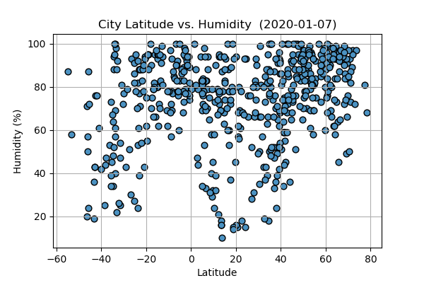

What's the relationship between Humidity (%) vs. Latitude?
It's pretty clear from this plot that the closer you get to the ecuator the hotter it gets. Interestingly... read more
Last updated 4 mins ago
From this sample, there doesn't seem to be a strong correlation between humidity and... read more
Last updated 3 mins ago